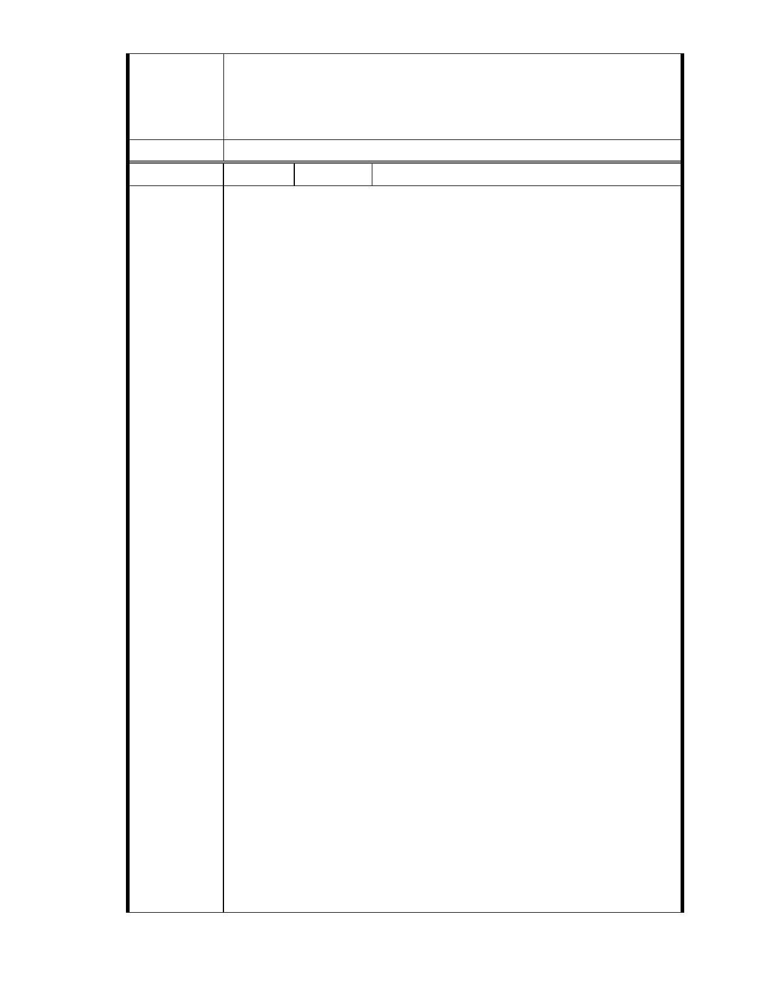

委員會決議
位欲改善現況之誠意。
二、相關陳情意見將納入本案審查人民意見，依法定程序辦理。
三、後續審理程序將要求申請人加強與在地區民、社會大眾，就基地現
況、規劃方案及環境助益作為等方面加強溝通。
同編號 1。
編號
陳情理由
148 陳情人 大湖內閣大廈管理委員會
發文日期：中華民國 101 年 10 月 15 日
發文字號：內慈字第 1011004 號
主旨
有關「變更臺北市內湖區成功路五段大湖公園北側部分保護區及道路用
地為社會福利特定專用區主要計畫案」，依據都市計畫法第 19 條規定，
應於送貴會審議前，應先辦理公開展覽及舉行說明會，並將日期及地點
登報周知，謀如說明，敬請查照。
說明
一、依據 2012 年 9 月 24 日本大廈第 16 屆第 1 次臨時管委會決議辦理。
二、依據都市計畫法第 19 條第一項（前段）：「主要計畫擬定後，送該管
政府都市計畫委員會審議前，應於各該直轄市、縣（市）（局）政府及鄉、
鎮、縣轄市公所公開展覽三十天及舉行說明會，並應將公開展覽及說明
會之日期及地點登報周知。」規定，本案應於主要計畫擬定後· 送 貴委
員會審議前，應辦理公開展覽三十天及舉行說明會，並應將公開展覽及
說明會之日期及地點登報周知。
三、依據都市計畫法第 19 條第一項（後段）：「任何公民或團體得於公開
展覽期間內，以書面載明姓名或名稱及地址，向該管政府提出意見，由
該管政府都市計畫委員會予以參考審議，連同審議結果及主要計畫一併
報請內政部核定之。」規定。本案之前於民國 94 年擬定主要計畫，至今
事隔 7 年有餘，計畫案改變與社會變遷均甚鉅，若未能將新擬定之主要
計畫依法辦理公開展覽三十天及舉行說明會，本條文規定之公民或團體
將無從了解新擬定案內容，亦無所依據向 貴委員會提出陳情意見，由 貴
委員會予以參考審議，本案亦將成為黑箱作業無頭公案。
四、經查本案新擬定之主要計畫並非完全按貴委員會審議要求修正，而
是一逕自擬定，全新的主要計畫方案，與之前公展舊案完全相異，依據
都市計畫法第 19 條第三項規定，應於主要計畫擬定後，送 貴委員會審
議前，辦理公開展覽三十天及舉行說明會。
五、依據貴委員會第 620 次委員會議做成，後續處理原則與方向建議 3：
「委員會要求市府及提案單位在後續能將本基地實際條件與開發構想向
社區居民、社會大眾、環保及專業人士等做更清楚的說明與積極的溝通」
及第一次專案小組審查會會議結論一：「並向當地居民進行詳細說明與溝
通。」規定，但慈濟完全無視前開要求，7 年多期間均未於大湖里、秀
湖里與本大廈辦理任何之公開展覽與說明會，亦從未公開向本社區住戶
做清楚的說明與積極的溝通，完全採黑箱作業，自行完成新擬定主要計
- 219 -